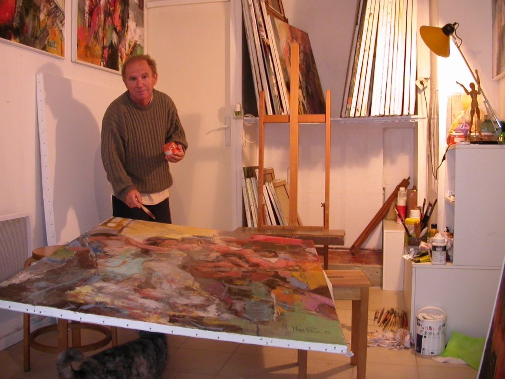

Hoo-Paris.com
9 de l'Allée du Moulieil à Cestas (33610).
E-mail : robert.hooparis@gmail.com
N° Siret : 530 723 683 000 13
L'atelier de Robert Hoo-Paris se visite sur R.V au 05 57 83 50 26

Professeur de biologie et artiste peintre, j’ai trouvé dans la peinture contemporaine et la biologie le même étonnement devant l’extraordinaire diversité des solutions qu'a le peintre pour traduire ses idées picturales et l'extraordinaire complexité des mécanismes biologiques. Souvent, l’artiste et le chercheur scientifique croient avoir enfin trouvé une vérité mais un seul coup de pinceau ou une nouvelle donnée viennent mettre à mal l’équilibre de sa peinture ou de son concept scientifique. Pour le peintre, c’est une lutte constante entre les couleurs qui s’affrontent, les lignes ou les aplats qui cassent un rythme, jusqu’à ce qu’un semblant d’harmonie et de cohérence se dégage enfin de la toile. Dans cette lutte, je crois que le hasard tient une large place dans la réussite d’une oeuvre artistique; tout le talent de l’artiste est de le contrôler pour constamment naviguer entre chaos et ordre, entre fantaisie et rigueur, entre abstraction et figuration.
Expositions principales :
- Société Artistique Talence Aquitaine, expositions annuelles, depuis 1989.
- Biennale de Cestas, depuis 1992.
- Les "Indépendants, plasticiens de Bordeaux", expositions annuelles, Bordeaux Saint Rémi , depuis 1990.
- Blanquefort, 1994, 2000, 2001, 2008.
- Mont de Marsan, la Minoterie, exposition personnelle, 2000.
- Albi, salon d’automne, 2000, 2001, 2002.
- La grande Motte, salon d’Automne, 1999, 2000, 2001.
- Les Chromalies, Marché d’art contemporain, Valence, 2003.
- Salon européen d’arts plastiques, Bordeaux, 2003.
- Invité de "Septemvir" 2003.
- Kunstgalerie Furstenwalde Allemagne, 2004.
- Château La Couspaude, Saint Emilion, expo personnelle, 2004.
- 32ème salon d'automne, Colomiers, 2004.
- Salon internationnal d'arts plastiques de Perpignan, 2005.
- Salon de peintures de la grande Motte, invité au "best-off", 2005.
- Galerie Hugo, La Teste, exposition personnelle, 2006.
- Open gaz de France, Primerose, Caudéran, exposition personnelle, 2007.
- Prieuré de Cayac, Gradignan, 2009. Exposition personnelle.
- Les peintres du val de l'Eyre, invité d'honneur, 2009.
- Arts et lettres de France, invité d'honneur, Mably, Bordeaux, 2010.
- Marché de Lerme, Bordeaux, exposition personnelle, 7-28 juillet, 2011.
- Biennale d'art contemporain de Saint-Martin Lacaussade, 2010-2012.
- Les picturales, Audenge, 2012.
- L'été des arts en Gascogne, Mirande, invité d'honneur, 2012.
- Le couvent des minimes, Citadelle de Blaye, expositon personnelle, 2013.
- Saint-Ciers de Canesse, invité d'honneur, 2014.
- Salon de printemps, musée Marzelles, Marmande, invité d'honneur, 2014.
- Art actuel, Poussignac, 2016 et 2017.
- Carré des Jalles, Saint-Médard en Jalles, 2017 et 2018.
- Salon d'art contemporain, Agen, 2016, 2018 et 2019.
- Cussac, fort Médoc, 2019.
- Galerie "la réserve des arts", Casteljaloux, exposition personnelle, 2019.
Récompenses artistiques principales :
- Grand prix de peinture de la ville de Talence, Médaille d’or, 1990 et 2003.
- 1er prix de peinture de la Biennale de Cestas, 1992 et 2016.
- 2ème prix figuratif du Lions Club Bordeaux Aquitaine 1993.
- 3ème prix de peinture du salon des arts Aquitaine-Blanquefort 1993.
- 2ème prix de peinture du salon des arts Aquitaine-Blanquefort 1994.
- Médaille d’argent de la ville de Bordeaux, 1997.
- 2ème prix de peinture des Artistes Indépendants d’Aquitaine, 2000.
- 1er prix du jury du salon de peinture de la Grande Motte, 2000.
- 1er prix de peinture du salon des arts Aquitaine-Blanquefort, 2001.
- 1er prix de peinture du salon d'automne de Colomiers, 2004.
- Grand prix de peinture de la ville de Talence, Médaille d'argent, 2009
- 1er prix de peinture salon d'automne de Marmande, 2010.
- 1er prix de peinture du salon d'art contemporain d'Agen, 2018.